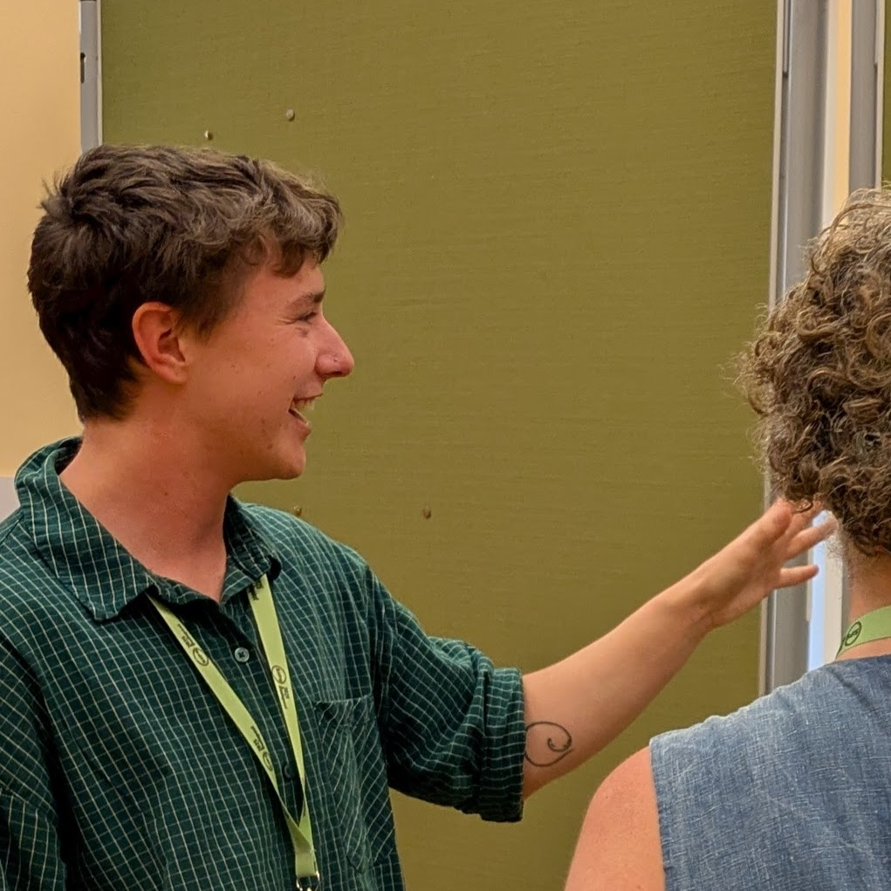

Teaching
University of Bern
- Co-teach the Psychology in crisis? Replications and reform movements in psychological science Masters level course
with PD Dr. Ian Hussey & Dr. Beth Clarke.
King's College London
- Created, co-convene, and co-teach the
Open and Responsible Research course with Dr. Filip Kaleta to researchers on
the
London Interdisciplinary
Social Sciences Doctoral Training Partnership programme. We recently converted this course into an online format.
-
MSc Mental Health Studies seminar lead. Created materials and lectures on how psychological trauma is
defined and measured, the use of generative AI in research, and (how to not do) plagiarism.
- Neuroscience MSc
dissertation project supervisor.
Guest lectures
I am always happy to speak on psychological measurement, mental health, and the credibility of research.
